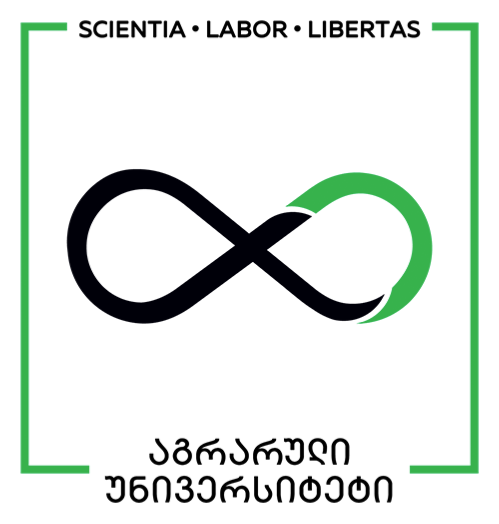
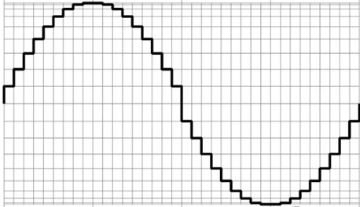
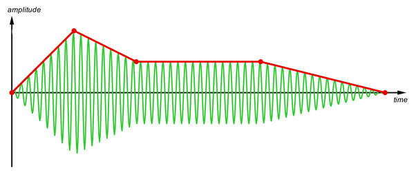
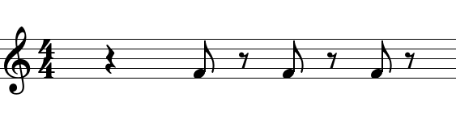
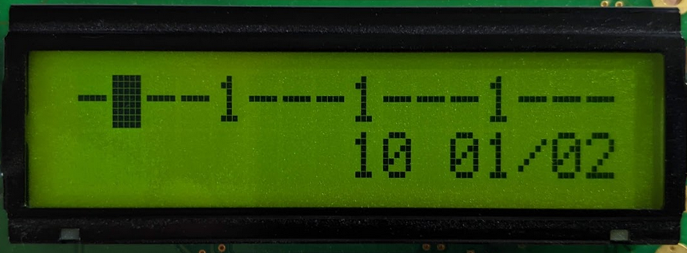
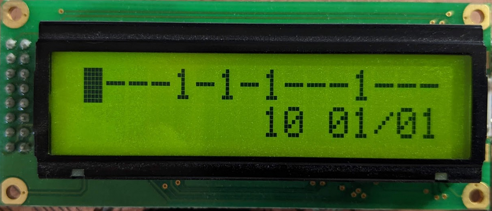

layout: true <div class="my-header"></div> <div class="my-footer"><span>Sandro Razmadze</span></div> --- class: center, middle #Designing a feature-rich polyphonic MIDI synthesizer Sandro Razmadze Agricultural University of Georgia --- #Content: 1. Synthesizers 1. Audio in the digital domain 1. Generating digital waveforms efficiently 1. Fast method for scaling values 1. Sequencer 1. Conclusions --- class: center, middle <h2 style="text-align:left; padding-left: 71px;">Synthesizer: </h3> <p style="text-align:left; color: #6f6f6f; padding-left: 71px; font-style: italic;">noun</p> - "An electronic machine for producing different sounds ..." <p style="text-align:right">- Oxford Advanced Learner's Dictionary</p> --- class: center, middle <div class="grid-container"> <div class="grid-item"> <img src="https://upload.wikimedia.org/wikipedia/commons/2/22/Minimoog.JPG" alt="pirveli"> </div> <div class="grid-item" style="margin-left: 20px;"> <img src="https://img.audiofanzine.com/images/u/product/normal/roland-tr-606-1370.jpg" alt="pirveli" style="padding-top: 17px;margin-left: 10px;"> </div> <div class="grid-item"> <img src="https://images.reverb.com/image/upload/s--gvL6jjwj--/a_exif,c_limit,e_unsharp_mask:80,f_auto,fl_progressive,g_south,h_620,q_90,w_620/v1461696899/xlryqjbbdoaafy8mcssi.jpg" alt="pirveli" style="padding-top: 16px;"> </div> <div class="grid-item"> <img src="https://reverbmachine.com/wp-content/uploads/2020/08/yamaha-gx1-early-synth.jpg" alt="pirveli" style="margin-left: 20px;"></div> </div> --- class: center, middle .fade[] --- ### digital audio .center[<svg xmlns="http://www.w3.org/2000/svg" xmlns:xlink="http://www.w3.org/1999/xlink" version="1.1" width="424px" viewBox="-0.5 -0.5 424 106" style="width: 72%;"><defs/><g><path d="M 20 97 L 20 13.37" fill="none" stroke="rgb(0, 0, 0)" stroke-miterlimit="10" pointer-events="stroke"/><path d="M 20 8.12 L 23.5 15.12 L 20 13.37 L 16.5 15.12 Z" fill="rgb(0, 0, 0)" stroke="rgb(0, 0, 0)" stroke-miterlimit="10" pointer-events="all"/><path d="M 10 87 L 408.63 87" fill="none" stroke="rgb(0, 0, 0)" stroke-miterlimit="10" pointer-events="stroke"/><path d="M 413.88 87 L 406.88 90.5 L 408.63 87 L 406.88 83.5 Z" fill="rgb(0, 0, 0)" stroke="rgb(0, 0, 0)" stroke-miterlimit="10" pointer-events="all"/><path d="M 20 62 Q 70 22 95 37 Q 120 52 133 75.5 Q 146 99 182 74.5 Q 218 50 226 56" fill="none" stroke="rgb(0, 0, 0)" stroke-miterlimit="10" pointer-events="stroke"/><path d="M 160 87 L 160 85" fill="none" stroke="rgb(0, 0, 0)" stroke-miterlimit="10" pointer-events="stroke"/><rect x="0" y="17" width="20" height="15" fill="none" stroke="none" pointer-events="all"/><g transform="translate(-0.5 -0.5)"><switch><foreignObject style="overflow: visible; text-align: left;" pointer-events="none" width="100%" height="100%" requiredFeatures="http://www.w3.org/TR/SVG11/feature#Extensibility"><div xmlns="http://www.w3.org/1999/xhtml" style="display: flex; align-items: unsafe center; justify-content: unsafe center; width: 18px; height: 1px; padding-top: 25px; margin-left: 1px;"><div style="box-sizing: border-box; font-size: 0px; text-align: center;" data-drawio-colors="color: rgb(0, 0, 0); "><div style="display: inline-block; font-size: 12px; font-family: Helvetica; color: rgb(0, 0, 0); line-height: 1.2; pointer-events: all; white-space: normal; overflow-wrap: normal;">V</div></div></div></foreignObject><text x="10" y="28" fill="rgb(0, 0, 0)" font-family="Helvetica" font-size="12px" text-anchor="middle">V</text></switch></g><rect x="297.5" y="35" width="120" height="30" fill="none" stroke="none" pointer-events="all"/><g transform="translate(-0.5 -0.5)"><switch><foreignObject style="overflow: visible; text-align: left;" pointer-events="none" width="100%" height="100%" requiredFeatures="http://www.w3.org/TR/SVG11/feature#Extensibility"><div xmlns="http://www.w3.org/1999/xhtml" style="display: flex; align-items: unsafe center; justify-content: unsafe flex-start; width: 1px; height: 1px; padding-top: 50px; margin-left: 299px;"><div style="box-sizing: border-box; font-size: 0px; text-align: left;" data-drawio-colors="color: rgb(0, 0, 0); "><div style="display: inline-block; font-size: 12px; font-family: Helvetica; color: rgb(0, 0, 0); line-height: 1.2; pointer-events: all; white-space: nowrap;">continuous voltage</div></div></div></foreignObject><text x="299" y="54" fill="rgb(0, 0, 0)" font-family="Helvetica" font-size="12px">continuous voltage</text></switch></g></g><switch><g requiredFeatures="http://www.w3.org/TR/SVG11/feature#Extensibility"/><a transform="translate(0,-5)" xlink:href="https://www.diagrams.net/doc/faq/svg-export-text-problems" target="_blank"><text text-anchor="middle" font-size="10px" x="50%" y="100%">Text is not SVG - cannot display</text></a></switch></svg>] -- .center[<svg xmlns="http://www.w3.org/2000/svg" xmlns:xlink="http://www.w3.org/1999/xlink" version="1.1" width="424px" viewBox="-0.5 -0.5 424 107" style="width: 72%"><defs/><g><path d="M 20 97 L 20 13.37" fill="none" stroke="rgb(0, 0, 0)" stroke-miterlimit="10" pointer-events="stroke"/><path d="M 20 8.12 L 23.5 15.12 L 20 13.37 L 16.5 15.12 Z" fill="rgb(0, 0, 0)" stroke="rgb(0, 0, 0)" stroke-miterlimit="10" pointer-events="all"/><path d="M 10 87 L 408.63 87" fill="none" stroke="rgb(0, 0, 0)" stroke-miterlimit="10" pointer-events="stroke"/><path d="M 413.88 87 L 406.88 90.5 L 408.63 87 L 406.88 83.5 Z" fill="rgb(0, 0, 0)" stroke="rgb(0, 0, 0)" stroke-miterlimit="10" pointer-events="all"/><path d="M 40 87 L 40 50.71" fill="none" stroke="rgb(0, 0, 0)" stroke-miterlimit="10" pointer-events="stroke"/><path d="M 40 47.71 L 41.5 49.21 L 40 50.71 L 38.5 49.21 Z" fill="none" stroke="rgb(0, 0, 0)" stroke-miterlimit="10" pointer-events="all"/><path d="M 50 87 L 50 45.71" fill="none" stroke="rgb(0, 0, 0)" stroke-miterlimit="10" pointer-events="stroke"/><path d="M 50 42.71 L 51.5 44.21 L 50 45.71 L 48.5 44.21 Z" fill="none" stroke="rgb(0, 0, 0)" stroke-miterlimit="10" pointer-events="all"/><path d="M 60 87 L 60 40.71" fill="none" stroke="rgb(0, 0, 0)" stroke-miterlimit="10" pointer-events="stroke"/><path d="M 60 37.71 L 61.5 39.21 L 60 40.71 L 58.5 39.21 Z" fill="none" stroke="rgb(0, 0, 0)" stroke-miterlimit="10" pointer-events="all"/><path d="M 70 87 L 70 37.71" fill="none" stroke="rgb(0, 0, 0)" stroke-miterlimit="10" pointer-events="stroke"/><path d="M 70 34.71 L 71.5 36.21 L 70 37.71 L 68.5 36.21 Z" fill="none" stroke="rgb(0, 0, 0)" stroke-miterlimit="10" pointer-events="all"/><path d="M 80 87 L 80 36.71" fill="none" stroke="rgb(0, 0, 0)" stroke-miterlimit="10" pointer-events="stroke"/><path d="M 80 33.71 L 81.5 35.21 L 80 36.71 L 78.5 35.21 Z" fill="none" stroke="rgb(0, 0, 0)" stroke-miterlimit="10" pointer-events="all"/><path d="M 90 87 L 90 37.71" fill="none" stroke="rgb(0, 0, 0)" stroke-miterlimit="10" pointer-events="stroke"/><path d="M 90 34.71 L 91.5 36.21 L 90 37.71 L 88.5 36.21 Z" fill="none" stroke="rgb(0, 0, 0)" stroke-miterlimit="10" pointer-events="all"/><path d="M 100 87 L 100 43.71" fill="none" stroke="rgb(0, 0, 0)" stroke-miterlimit="10" pointer-events="stroke"/><path d="M 100 40.71 L 101.5 42.21 L 100 43.71 L 98.5 42.21 Z" fill="none" stroke="rgb(0, 0, 0)" stroke-miterlimit="10" pointer-events="all"/><path d="M 110 87 L 110 50.71" fill="none" stroke="rgb(0, 0, 0)" stroke-miterlimit="10" pointer-events="stroke"/><path d="M 110 47.71 L 111.5 49.21 L 110 50.71 L 108.5 49.21 Z" fill="none" stroke="rgb(0, 0, 0)" stroke-miterlimit="10" pointer-events="all"/><path d="M 120 87 L 120 60.71" fill="none" stroke="rgb(0, 0, 0)" stroke-miterlimit="10" pointer-events="stroke"/><path d="M 120 57.71 L 121.5 59.21 L 120 60.71 L 118.5 59.21 Z" fill="none" stroke="rgb(0, 0, 0)" stroke-miterlimit="10" pointer-events="all"/><path d="M 130 87 L 130 73.71" fill="none" stroke="rgb(0, 0, 0)" stroke-miterlimit="10" pointer-events="stroke"/><path d="M 130 70.71 L 131.5 72.21 L 130 73.71 L 128.5 72.21 Z" fill="none" stroke="rgb(0, 0, 0)" stroke-miterlimit="10" pointer-events="all"/><path d="M 140 87 L 140 86.71" fill="none" stroke="rgb(0, 0, 0)" stroke-miterlimit="10" pointer-events="stroke"/><path d="M 140 83.71 L 141.5 85.21 L 140 86.71 L 138.5 85.21 Z" fill="none" stroke="rgb(0, 0, 0)" stroke-miterlimit="10" pointer-events="all"/><path d="M 160 87 L 160 88.71" fill="none" stroke="rgb(0, 0, 0)" stroke-miterlimit="10" pointer-events="stroke"/><path d="M 160 85.71 L 161.5 87.21 L 160 88.71 L 158.5 87.21 Z" fill="none" stroke="rgb(0, 0, 0)" stroke-miterlimit="10" pointer-events="all"/><path d="M 170 87 L 170 84.71" fill="none" stroke="rgb(0, 0, 0)" stroke-miterlimit="10" pointer-events="stroke"/><path d="M 170 81.71 L 171.5 83.21 L 170 84.71 L 168.5 83.21 Z" fill="none" stroke="rgb(0, 0, 0)" stroke-miterlimit="10" pointer-events="all"/><path d="M 180 87 L 180 78.71" fill="none" stroke="rgb(0, 0, 0)" stroke-miterlimit="10" pointer-events="stroke"/><path d="M 180 75.71 L 181.5 77.21 L 180 78.71 L 178.5 77.21 Z" fill="none" stroke="rgb(0, 0, 0)" stroke-miterlimit="10" pointer-events="all"/><path d="M 190 87 L 190 72.71" fill="none" stroke="rgb(0, 0, 0)" stroke-miterlimit="10" pointer-events="stroke"/><path d="M 190 69.71 L 191.5 71.21 L 190 72.71 L 188.5 71.21 Z" fill="none" stroke="rgb(0, 0, 0)" stroke-miterlimit="10" pointer-events="all"/><path d="M 200 87 L 200 66.71" fill="none" stroke="rgb(0, 0, 0)" stroke-miterlimit="10" pointer-events="stroke"/><path d="M 200 63.71 L 201.5 65.21 L 200 66.71 L 198.5 65.21 Z" fill="none" stroke="rgb(0, 0, 0)" stroke-miterlimit="10" pointer-events="all"/><path d="M 210 87 L 210 61.71" fill="none" stroke="rgb(0, 0, 0)" stroke-miterlimit="10" pointer-events="stroke"/><path d="M 210 58.71 L 211.5 60.21 L 210 61.71 L 208.5 60.21 Z" fill="none" stroke="rgb(0, 0, 0)" stroke-miterlimit="10" pointer-events="all"/><path d="M 30 87 L 30 57.71" fill="none" stroke="rgb(0, 0, 0)" stroke-miterlimit="10" pointer-events="stroke"/><path d="M 30 54.71 L 31.5 56.21 L 30 57.71 L 28.5 56.21 Z" fill="none" stroke="rgb(0, 0, 0)" stroke-miterlimit="10" pointer-events="all"/><path d="M 220 87 L 220 58.71" fill="none" stroke="rgb(0, 0, 0)" stroke-miterlimit="10" pointer-events="stroke"/><path d="M 220 55.71 L 221.5 57.21 L 220 58.71 L 218.5 57.21 Z" fill="none" stroke="rgb(0, 0, 0)" stroke-miterlimit="10" pointer-events="all"/><path d="M 150 87 L 150 88.71" fill="none" stroke="rgb(0, 0, 0)" stroke-miterlimit="10" pointer-events="stroke"/><path d="M 150 85.71 L 151.5 87.21 L 150 88.71 L 148.5 87.21 Z" fill="none" stroke="rgb(0, 0, 0)" stroke-miterlimit="10" pointer-events="all"/><rect x="25" y="27" width="150" height="65" fill="none" stroke="rgb(0, 0, 0)" stroke-width="0.5" pointer-events="all"/><g transform="translate(-0.5 -0.5)"><switch><foreignObject style="overflow: visible; text-align: left;" pointer-events="none" width="100%" height="100%" requiredFeatures="http://www.w3.org/TR/SVG11/feature#Extensibility"><div xmlns="http://www.w3.org/1999/xhtml" style="display: flex; align-items: unsafe center; justify-content: unsafe center; width: 148px; height: 1px; padding-top: 20px; margin-left: 26px;"><div style="box-sizing: border-box; font-size: 0px; text-align: center;" data-drawio-colors="color: rgb(0, 0, 0); "><div style="display: inline-block; font-size: 12px; font-family: Helvetica; color: rgb(0, 0, 0); line-height: 1.2; pointer-events: all; white-space: normal; overflow-wrap: normal;">16 samples</div></div></div></foreignObject><text x="100" y="23" fill="rgb(0, 0, 0)" font-family="Helvetica" font-size="12px" text-anchor="middle">16 samples</text></switch></g><rect x="385" y="90.5" width="20" height="15" fill="none" stroke="none" pointer-events="all"/><g transform="translate(-0.5 -0.5)"><switch><foreignObject style="overflow: visible; text-align: left;" pointer-events="none" width="100%" height="100%" requiredFeatures="http://www.w3.org/TR/SVG11/feature#Extensibility"><div xmlns="http://www.w3.org/1999/xhtml" style="display: flex; align-items: unsafe center; justify-content: unsafe center; width: 18px; height: 1px; padding-top: 98px; margin-left: 386px;"><div style="box-sizing: border-box; font-size: 0px; text-align: center;" data-drawio-colors="color: rgb(0, 0, 0); "><div style="display: inline-block; font-size: 12px; font-family: Helvetica; color: rgb(0, 0, 0); line-height: 1.2; pointer-events: all; white-space: normal; overflow-wrap: normal;">t</div></div></div></foreignObject><text x="395" y="102" fill="rgb(0, 0, 0)" font-family="Helvetica" font-size="12px" text-anchor="middle">t</text></switch></g><rect x="300" y="12" width="110" height="75" fill="none" stroke="none" pointer-events="all"/><g transform="translate(-0.5 -0.5)"><switch><foreignObject style="overflow: visible; text-align: left;" pointer-events="none" width="100%" height="100%" requiredFeatures="http://www.w3.org/TR/SVG11/feature#Extensibility"><div xmlns="http://www.w3.org/1999/xhtml" style="display: flex; align-items: unsafe center; justify-content: unsafe flex-start; width: 1px; height: 1px; padding-top: 50px; margin-left: 302px;"><div style="box-sizing: border-box; font-size: 0px; text-align: left;" data-drawio-colors="color: rgb(0, 0, 0); "><div style="display: inline-block; font-size: 12px; font-family: Helvetica; color: rgb(0, 0, 0); line-height: 1.2; pointer-events: all; white-space: nowrap;"><div align="left">DAC</div><div align="left">32 bit</div><div align="left">48khz</div><div align="left">16 sample buffer<br /></div></div></div></div></foreignObject><text x="302" y="53" fill="rgb(0, 0, 0)" font-family="Helvetica" font-size="12px">DAC...</text></switch></g><rect x="0" y="17" width="20" height="15" fill="none" stroke="none" pointer-events="all"/><g transform="translate(-0.5 -0.5)"><switch><foreignObject style="overflow: visible; text-align: left;" pointer-events="none" width="100%" height="100%" requiredFeatures="http://www.w3.org/TR/SVG11/feature#Extensibility"><div xmlns="http://www.w3.org/1999/xhtml" style="display: flex; align-items: unsafe center; justify-content: unsafe center; width: 18px; height: 1px; padding-top: 25px; margin-left: 1px;"><div style="box-sizing: border-box; font-size: 0px; text-align: center;" data-drawio-colors="color: rgb(0, 0, 0); "><div style="display: inline-block; font-size: 12px; font-family: Helvetica; color: rgb(0, 0, 0); line-height: 1.2; pointer-events: all; white-space: normal; overflow-wrap: normal;">n</div></div></div></foreignObject><text x="10" y="28" fill="rgb(0, 0, 0)" font-family="Helvetica" font-size="12px" text-anchor="middle">n</text></switch></g></g><switch><g requiredFeatures="http://www.w3.org/TR/SVG11/feature#Extensibility"/><a transform="translate(0,-5)" xlink:href="https://www.diagrams.net/doc/faq/svg-export-text-problems" target="_blank"><text text-anchor="middle" font-size="10px" x="50%" y="100%">Text is not SVG - cannot display</text></a></switch></svg>] -- .center[<svg xmlns="http://www.w3.org/2000/svg" xmlns:xlink="http://www.w3.org/1999/xlink" version="1.1" width="424px" viewBox="-0.5 -0.5 424 109" style="width: 72%"><defs/><g><path d="M 20 97 L 20 13.37" fill="none" stroke="rgb(0, 0, 0)" stroke-miterlimit="10" pointer-events="stroke"/><path d="M 20 8.12 L 23.5 15.12 L 20 13.37 L 16.5 15.12 Z" fill="rgb(0, 0, 0)" stroke="rgb(0, 0, 0)" stroke-miterlimit="10" pointer-events="all"/><path d="M 10 87 L 408.63 87" fill="none" stroke="rgb(0, 0, 0)" stroke-miterlimit="10" pointer-events="stroke"/><path d="M 413.88 87 L 406.88 90.5 L 408.63 87 L 406.88 83.5 Z" fill="rgb(0, 0, 0)" stroke="rgb(0, 0, 0)" stroke-miterlimit="10" pointer-events="all"/><path d="M 50 87 L 50 45.71" fill="none" stroke="rgb(0, 0, 0)" stroke-miterlimit="10" pointer-events="stroke"/><path d="M 50 42.71 L 51.5 44.21 L 50 45.71 L 48.5 44.21 Z" fill="none" stroke="rgb(0, 0, 0)" stroke-miterlimit="10" pointer-events="all"/><path d="M 70 87 L 70 37.71" fill="none" stroke="rgb(0, 0, 0)" stroke-miterlimit="10" pointer-events="stroke"/><path d="M 70 34.71 L 71.5 36.21 L 70 37.71 L 68.5 36.21 Z" fill="none" stroke="rgb(0, 0, 0)" stroke-miterlimit="10" pointer-events="all"/><path d="M 90 87 L 90 37.71" fill="none" stroke="rgb(0, 0, 0)" stroke-miterlimit="10" pointer-events="stroke"/><path d="M 90 34.71 L 91.5 36.21 L 90 37.71 L 88.5 36.21 Z" fill="none" stroke="rgb(0, 0, 0)" stroke-miterlimit="10" pointer-events="all"/><path d="M 110 87 L 110 50.71" fill="none" stroke="rgb(0, 0, 0)" stroke-miterlimit="10" pointer-events="stroke"/><path d="M 110 47.71 L 111.5 49.21 L 110 50.71 L 108.5 49.21 Z" fill="none" stroke="rgb(0, 0, 0)" stroke-miterlimit="10" pointer-events="all"/><path d="M 130 87 L 130 73.71" fill="none" stroke="rgb(0, 0, 0)" stroke-miterlimit="10" pointer-events="stroke"/><path d="M 130 70.71 L 131.5 72.21 L 130 73.71 L 128.5 72.21 Z" fill="none" stroke="rgb(0, 0, 0)" stroke-miterlimit="10" pointer-events="all"/><path d="M 170 87 L 170 84.71" fill="none" stroke="rgb(0, 0, 0)" stroke-miterlimit="10" pointer-events="stroke"/><path d="M 170 81.71 L 171.5 83.21 L 170 84.71 L 168.5 83.21 Z" fill="none" stroke="rgb(0, 0, 0)" stroke-miterlimit="10" pointer-events="all"/><path d="M 190 87 L 190 72.71" fill="none" stroke="rgb(0, 0, 0)" stroke-miterlimit="10" pointer-events="stroke"/><path d="M 190 69.71 L 191.5 71.21 L 190 72.71 L 188.5 71.21 Z" fill="none" stroke="rgb(0, 0, 0)" stroke-miterlimit="10" pointer-events="all"/><path d="M 210 87 L 210 61.71" fill="none" stroke="rgb(0, 0, 0)" stroke-miterlimit="10" pointer-events="stroke"/><path d="M 210 58.71 L 211.5 60.21 L 210 61.71 L 208.5 60.21 Z" fill="none" stroke="rgb(0, 0, 0)" stroke-miterlimit="10" pointer-events="all"/><path d="M 30 87 L 30 57.71" fill="none" stroke="rgb(0, 0, 0)" stroke-miterlimit="10" pointer-events="stroke"/><path d="M 30 54.71 L 31.5 56.21 L 30 57.71 L 28.5 56.21 Z" fill="none" stroke="rgb(0, 0, 0)" stroke-miterlimit="10" pointer-events="all"/><path d="M 150 87 L 150 88.71" fill="none" stroke="rgb(0, 0, 0)" stroke-miterlimit="10" pointer-events="stroke"/><path d="M 150 85.71 L 151.5 87.21 L 150 88.71 L 148.5 87.21 Z" fill="none" stroke="rgb(0, 0, 0)" stroke-miterlimit="10" pointer-events="all"/><rect x="65" y="27" width="10" height="65" fill="none" stroke="rgb(0, 0, 0)" stroke-width="0.5" pointer-events="all"/><rect x="385" y="92" width="20" height="15" fill="none" stroke="none" pointer-events="all"/><g transform="translate(-0.5 -0.5)"><switch><foreignObject style="overflow: visible; text-align: left;" pointer-events="none" width="100%" height="100%" requiredFeatures="http://www.w3.org/TR/SVG11/feature#Extensibility"><div xmlns="http://www.w3.org/1999/xhtml" style="display: flex; align-items: unsafe center; justify-content: unsafe center; width: 18px; height: 1px; padding-top: 100px; margin-left: 386px;"><div style="box-sizing: border-box; font-size: 0px; text-align: center;" data-drawio-colors="color: rgb(0, 0, 0); "><div style="display: inline-block; font-size: 12px; font-family: Helvetica; color: rgb(0, 0, 0); line-height: 1.2; pointer-events: all; white-space: normal; overflow-wrap: normal;">t</div></div></div></foreignObject><text x="395" y="103" fill="rgb(0, 0, 0)" font-family="Helvetica" font-size="12px" text-anchor="middle">t</text></switch></g><rect x="175" y="62" width="30" height="35" fill="none" stroke="none" pointer-events="all"/><g transform="translate(-0.5 -0.5)"><switch><foreignObject style="overflow: visible; text-align: left;" pointer-events="none" width="100%" height="100%" requiredFeatures="http://www.w3.org/TR/SVG11/feature#Extensibility"><div xmlns="http://www.w3.org/1999/xhtml" style="display: flex; align-items: unsafe flex-start; justify-content: unsafe flex-start; width: 28px; height: 1px; padding-top: 69px; margin-left: 177px;"><div style="box-sizing: border-box; font-size: 0px; text-align: left;" data-drawio-colors="color: rgb(0, 0, 0); "><div style="display: inline-block; font-size: 12px; font-family: Helvetica; color: rgb(0, 0, 0); line-height: 1.2; pointer-events: all; white-space: normal; overflow-wrap: normal;"> </div></div></div></foreignObject><text x="177" y="81" fill="rgb(0, 0, 0)" font-family="Helvetica" font-size="12px"> </text></switch></g><rect x="300" y="12" width="105" height="75" fill="none" stroke="none" pointer-events="all"/><g transform="translate(-0.5 -0.5)"><switch><foreignObject style="overflow: visible; text-align: left;" pointer-events="none" width="100%" height="100%" requiredFeatures="http://www.w3.org/TR/SVG11/feature#Extensibility"><div xmlns="http://www.w3.org/1999/xhtml" style="display: flex; align-items: unsafe center; justify-content: unsafe flex-start; width: 1px; height: 1px; padding-top: 50px; margin-left: 302px;"><div style="box-sizing: border-box; font-size: 0px; text-align: left;" data-drawio-colors="color: rgb(0, 0, 0); "><div style="display: inline-block; font-size: 12px; font-family: Helvetica; color: rgb(0, 0, 0); line-height: 1.2; pointer-events: all; white-space: nowrap;"><div>PWM</div><div>9 bit</div><div>31250khz</div><div>1 sample buffer<br /></div></div></div></div></foreignObject><text x="302" y="53" fill="rgb(0, 0, 0)" font-family="Helvetica" font-size="12px">PWM...</text></switch></g><rect x="0" y="18" width="20" height="15" fill="none" stroke="none" pointer-events="all"/><g transform="translate(-0.5 -0.5)"><switch><foreignObject style="overflow: visible; text-align: left;" pointer-events="none" width="100%" height="100%" requiredFeatures="http://www.w3.org/TR/SVG11/feature#Extensibility"><div xmlns="http://www.w3.org/1999/xhtml" style="display: flex; align-items: unsafe center; justify-content: unsafe center; width: 18px; height: 1px; padding-top: 26px; margin-left: 1px;"><div style="box-sizing: border-box; font-size: 0px; text-align: center;" data-drawio-colors="color: rgb(0, 0, 0); "><div style="display: inline-block; font-size: 12px; font-family: Helvetica; color: rgb(0, 0, 0); line-height: 1.2; pointer-events: all; white-space: normal; overflow-wrap: normal;">n</div></div></div></foreignObject><text x="10" y="29" fill="rgb(0, 0, 0)" font-family="Helvetica" font-size="12px" text-anchor="middle">n</text></switch></g></g><switch><g requiredFeatures="http://www.w3.org/TR/SVG11/feature#Extensibility"/><a transform="translate(0,-5)" xlink:href="https://www.diagrams.net/doc/faq/svg-export-text-problems" target="_blank"><text text-anchor="middle" font-size="10px" x="50%" y="100%">Text is not SVG - cannot display</text></a></switch></svg>] -- <p style="text-align:center"> \({16000000 \over 31250}=512\) (cycles) </p> --- ### generating waveforms sine wave (naive impelemtation): .left-column[ ```c float time=0; float delta=0.1; float generate_output(){ time=time+delta; return sin(time)*512; } ``` ] --- ### generating waveforms sine wave (naive impelemtation): .left-column[ ```c float time=0; float delta=0.1; float generate_output(){ time=time+delta; * return sin(time)*512; } ``` - -Os build - just for one ```sin``` call - huge amounts of asm = _SLOW_ ] <div class="right-column" style="margin-top: -46px;margin-right: -100px; width: 50%; float: right;"> generated asm: <p><img src="./output.gif" style="width: 58%; object-fit: contain"></p> </div> --- ### generating waveforms - using lookup tables ```c sine_wave[253]= {127, 130, 133, 137, 140, 143, 146, 149, 152, 155, 158, 162, 165, 168, 171, 174, 177, 179, 182, 185, 188, 191, 193, 196, 199, 201, 204, 206, 209, 211, 214, 216, 218, 220, 223, 225, 227, 229, 231, 232, 234, 236, 237, 239, 240, 242, 243, 244, ...} ``` .center[</img>] --- ###scaling by using fixed point arithmetic: .center[</img>] -- .center[ `\({232 \cdot 0.32}=74.24\)` ] -- using real numbers takes a lot of processing power. In contrast, multiplication and division on whole numbers is extremely fast. -- instead of using real numbers we can pre-scale both operands by same factor and operate using whole numbers: .center[ `\({(232 \cdot 2^8) \cdot (0.32* 2^8)}\)` ] and later we just divide it by our scaling factor squared: .center[ `\({{(232 \cdot 2^8) \cdot 81} \over {2^{16}}} = 73\)` ] --- ### sequencer - definiton musical notation: .center[</img>] -- sequencer representation: .center[</img>] -- layout in memory: .center[<svg xmlns="http://www.w3.org/2000/svg" xmlns:xlink="http://www.w3.org/1999/xlink" version="1.1" width="402px" viewBox="-0.5 -0.5 402 142" style="width: 400px;"><defs/><g><path d="M 0 0 L 0 40 L 80 40 L 80 0" fill="none" stroke="rgb(0, 0, 0)" stroke-miterlimit="10" pointer-events="stroke"/><path d="M 80 0 L 80 40 L 160 40 L 160 0" fill="none" stroke="rgb(0, 0, 0)" stroke-miterlimit="10" pointer-events="stroke"/><path d="M 160 0 L 160 40 L 240 40 L 240 0" fill="none" stroke="rgb(0, 0, 0)" stroke-miterlimit="10" pointer-events="stroke"/><path d="M 240 0 L 240 40 L 320 40 L 320 0" fill="none" stroke="rgb(0, 0, 0)" stroke-miterlimit="10" pointer-events="stroke"/><path d="M 320 0 L 320 40 L 400 40 L 400 0" fill="none" stroke="rgb(0, 0, 0)" stroke-miterlimit="10" pointer-events="stroke"/><rect x="25" y="36" width="30" height="30" fill="none" stroke="none" pointer-events="all"/><g transform="translate(-0.5 -0.5)"><switch><foreignObject style="overflow: visible; text-align: left;" pointer-events="none" width="100%" height="100%" requiredFeatures="http://www.w3.org/TR/SVG11/feature#Extensibility"><div xmlns="http://www.w3.org/1999/xhtml" style="display: flex; align-items: unsafe center; justify-content: unsafe center; width: 1px; height: 1px; padding-top: 51px; margin-left: 40px;"><div style="box-sizing: border-box; font-size: 0px; text-align: center;" data-drawio-colors="color: rgb(0, 0, 0); "><div style="display: inline-block; font-size: 12px; font-family: Helvetica; color: rgb(0, 0, 0); line-height: 1.2; pointer-events: all; white-space: nowrap;">1</div></div></div></foreignObject><text x="40" y="55" fill="rgb(0, 0, 0)" font-family="Helvetica" font-size="12px" text-anchor="middle">1</text></switch></g><rect x="185" y="36" width="30" height="30" fill="none" stroke="none" pointer-events="all"/><g transform="translate(-0.5 -0.5)"><switch><foreignObject style="overflow: visible; text-align: left;" pointer-events="none" width="100%" height="100%" requiredFeatures="http://www.w3.org/TR/SVG11/feature#Extensibility"><div xmlns="http://www.w3.org/1999/xhtml" style="display: flex; align-items: unsafe center; justify-content: unsafe center; width: 1px; height: 1px; padding-top: 51px; margin-left: 200px;"><div style="box-sizing: border-box; font-size: 0px; text-align: center;" data-drawio-colors="color: rgb(0, 0, 0); "><div style="display: inline-block; font-size: 12px; font-family: Helvetica; color: rgb(0, 0, 0); line-height: 1.2; pointer-events: all; white-space: nowrap;">3</div></div></div></foreignObject><text x="200" y="55" fill="rgb(0, 0, 0)" font-family="Helvetica" font-size="12px" text-anchor="middle">3</text></switch></g><rect x="105" y="36" width="30" height="30" fill="none" stroke="none" pointer-events="all"/><g transform="translate(-0.5 -0.5)"><switch><foreignObject style="overflow: visible; text-align: left;" pointer-events="none" width="100%" height="100%" requiredFeatures="http://www.w3.org/TR/SVG11/feature#Extensibility"><div xmlns="http://www.w3.org/1999/xhtml" style="display: flex; align-items: unsafe center; justify-content: unsafe center; width: 1px; height: 1px; padding-top: 51px; margin-left: 120px;"><div style="box-sizing: border-box; font-size: 0px; text-align: center;" data-drawio-colors="color: rgb(0, 0, 0); "><div style="display: inline-block; font-size: 12px; font-family: Helvetica; color: rgb(0, 0, 0); line-height: 1.2; pointer-events: all; white-space: nowrap;">2</div></div></div></foreignObject><text x="120" y="55" fill="rgb(0, 0, 0)" font-family="Helvetica" font-size="12px" text-anchor="middle">2</text></switch></g><rect x="265" y="36" width="30" height="30" fill="none" stroke="none" pointer-events="all"/><g transform="translate(-0.5 -0.5)"><switch><foreignObject style="overflow: visible; text-align: left;" pointer-events="none" width="100%" height="100%" requiredFeatures="http://www.w3.org/TR/SVG11/feature#Extensibility"><div xmlns="http://www.w3.org/1999/xhtml" style="display: flex; align-items: unsafe center; justify-content: unsafe center; width: 1px; height: 1px; padding-top: 51px; margin-left: 280px;"><div style="box-sizing: border-box; font-size: 0px; text-align: center;" data-drawio-colors="color: rgb(0, 0, 0); "><div style="display: inline-block; font-size: 12px; font-family: Helvetica; color: rgb(0, 0, 0); line-height: 1.2; pointer-events: all; white-space: nowrap;">4</div></div></div></foreignObject><text x="280" y="55" fill="rgb(0, 0, 0)" font-family="Helvetica" font-size="12px" text-anchor="middle">4</text></switch></g><rect x="345" y="36" width="30" height="30" fill="none" stroke="none" pointer-events="all"/><g transform="translate(-0.5 -0.5)"><switch><foreignObject style="overflow: visible; text-align: left;" pointer-events="none" width="100%" height="100%" requiredFeatures="http://www.w3.org/TR/SVG11/feature#Extensibility"><div xmlns="http://www.w3.org/1999/xhtml" style="display: flex; align-items: unsafe center; justify-content: unsafe center; width: 1px; height: 1px; padding-top: 51px; margin-left: 360px;"><div style="box-sizing: border-box; font-size: 0px; text-align: center;" data-drawio-colors="color: rgb(0, 0, 0); "><div style="display: inline-block; font-size: 12px; font-family: Helvetica; color: rgb(0, 0, 0); line-height: 1.2; pointer-events: all; white-space: nowrap;">5</div></div></div></foreignObject><text x="360" y="55" fill="rgb(0, 0, 0)" font-family="Helvetica" font-size="12px" text-anchor="middle">5</text></switch></g><rect x="5" y="5" width="70" height="30" fill="#a0dba6" stroke="none" pointer-events="all"/><rect x="85" y="5" width="70" height="30" fill="#a0dba6" stroke="none" pointer-events="all"/><rect x="165" y="5" width="70" height="30" fill="#a0dba6" stroke="none" pointer-events="all"/><path d="M 50 35 L 76.47 74.7" fill="none" stroke="rgb(0, 0, 0)" stroke-miterlimit="10" pointer-events="stroke"/><path d="M 79.38 79.07 L 72.58 75.19 L 76.47 74.7 L 78.41 71.3 Z" fill="rgb(0, 0, 0)" stroke="rgb(0, 0, 0)" stroke-miterlimit="10" pointer-events="all"/><rect x="80" y="80" width="80" height="60" fill="none" stroke="rgb(0, 0, 0)" pointer-events="all"/><g transform="translate(-0.5 -0.5)"><switch><foreignObject style="overflow: visible; text-align: left;" pointer-events="none" width="100%" height="100%" requiredFeatures="http://www.w3.org/TR/SVG11/feature#Extensibility"><div xmlns="http://www.w3.org/1999/xhtml" style="display: flex; align-items: unsafe center; justify-content: unsafe center; width: 1px; height: 1px; padding-top: 110px; margin-left: 120px;"><div style="box-sizing: border-box; font-size: 0px; text-align: center;" data-drawio-colors="color: rgb(0, 0, 0); "><div style="display: inline-block; font-size: 12px; font-family: Helvetica; color: rgb(0, 0, 0); line-height: 1.2; pointer-events: all; white-space: nowrap;"><div align="left">Note: C#<br /></div><div><div align="left">Duration: 2</div><div align="left">Volume: 10<br /></div> </div></div></div></div></foreignObject><text x="120" y="114" fill="rgb(0, 0, 0)" font-family="Helvetica" font-size="12px" text-anchor="middle">Note: C#...</text></switch></g></g><switch><g requiredFeatures="http://www.w3.org/TR/SVG11/feature#Extensibility"/><a transform="translate(0,-5)" xlink:href="https://www.diagrams.net/doc/faq/svg-export-text-problems" target="_blank"><text text-anchor="middle" font-size="10px" x="50%" y="100%">Text is not SVG - cannot display</text></a></switch></svg>] --- ### sequencer - memory layout problem inserting a new note after the first one: <p style="text-align: center"></img></p> -- now elements in our array are out of order: <p style="text-align: center"><svg xmlns="http://www.w3.org/2000/svg" xmlns:xlink="http://www.w3.org/1999/xlink" version="1.1" width="402px" viewBox="-0.5 -0.5 402 67" style="width: 500px;"><defs/><g><path d="M 0 0 L 0 40 L 80 40 L 80 0" fill="none" stroke="rgb(0, 0, 0)" stroke-miterlimit="10" pointer-events="stroke"/><path d="M 80 0 L 80 40 L 160 40 L 160 0" fill="none" stroke="rgb(0, 0, 0)" stroke-miterlimit="10" pointer-events="stroke"/><path d="M 160 0 L 160 40 L 240 40 L 240 0" fill="none" stroke="rgb(0, 0, 0)" stroke-miterlimit="10" pointer-events="stroke"/><path d="M 240 0 L 240 40 L 320 40 L 320 0" fill="none" stroke="rgb(0, 0, 0)" stroke-miterlimit="10" pointer-events="stroke"/><path d="M 320 0 L 320 40 L 400 40 L 400 0" fill="none" stroke="rgb(0, 0, 0)" stroke-miterlimit="10" pointer-events="stroke"/><rect x="25" y="36" width="30" height="30" fill="none" stroke="none" pointer-events="all"/><g transform="translate(-0.5 -0.5)"><switch><foreignObject style="overflow: visible; text-align: left;" pointer-events="none" width="100%" height="100%" requiredFeatures="http://www.w3.org/TR/SVG11/feature#Extensibility"><div xmlns="http://www.w3.org/1999/xhtml" style="display: flex; align-items: unsafe center; justify-content: unsafe center; width: 1px; height: 1px; padding-top: 51px; margin-left: 40px;"><div style="box-sizing: border-box; font-size: 0px; text-align: center;" data-drawio-colors="color: rgb(0, 0, 0); "><div style="display: inline-block; font-size: 12px; font-family: Helvetica; color: rgb(0, 0, 0); line-height: 1.2; pointer-events: all; white-space: nowrap;">1</div></div></div></foreignObject><text x="40" y="55" fill="rgb(0, 0, 0)" font-family="Helvetica" font-size="12px" text-anchor="middle">1</text></switch></g><rect x="185" y="36" width="30" height="30" fill="none" stroke="none" pointer-events="all"/><g transform="translate(-0.5 -0.5)"><switch><foreignObject style="overflow: visible; text-align: left;" pointer-events="none" width="100%" height="100%" requiredFeatures="http://www.w3.org/TR/SVG11/feature#Extensibility"><div xmlns="http://www.w3.org/1999/xhtml" style="display: flex; align-items: unsafe center; justify-content: unsafe center; width: 1px; height: 1px; padding-top: 51px; margin-left: 200px;"><div style="box-sizing: border-box; font-size: 0px; text-align: center;" data-drawio-colors="color: rgb(0, 0, 0); "><div style="display: inline-block; font-size: 12px; font-family: Helvetica; color: rgb(0, 0, 0); line-height: 1.2; pointer-events: all; white-space: nowrap;">3</div></div></div></foreignObject><text x="200" y="55" fill="rgb(0, 0, 0)" font-family="Helvetica" font-size="12px" text-anchor="middle">3</text></switch></g><rect x="105" y="36" width="30" height="30" fill="none" stroke="none" pointer-events="all"/><g transform="translate(-0.5 -0.5)"><switch><foreignObject style="overflow: visible; text-align: left;" pointer-events="none" width="100%" height="100%" requiredFeatures="http://www.w3.org/TR/SVG11/feature#Extensibility"><div xmlns="http://www.w3.org/1999/xhtml" style="display: flex; align-items: unsafe center; justify-content: unsafe center; width: 1px; height: 1px; padding-top: 51px; margin-left: 120px;"><div style="box-sizing: border-box; font-size: 0px; text-align: center;" data-drawio-colors="color: rgb(0, 0, 0); "><div style="display: inline-block; font-size: 12px; font-family: Helvetica; color: rgb(0, 0, 0); line-height: 1.2; pointer-events: all; white-space: nowrap;">2</div></div></div></foreignObject><text x="120" y="55" fill="rgb(0, 0, 0)" font-family="Helvetica" font-size="12px" text-anchor="middle">2</text></switch></g><rect x="265" y="36" width="30" height="30" fill="none" stroke="none" pointer-events="all"/><g transform="translate(-0.5 -0.5)"><switch><foreignObject style="overflow: visible; text-align: left;" pointer-events="none" width="100%" height="100%" requiredFeatures="http://www.w3.org/TR/SVG11/feature#Extensibility"><div xmlns="http://www.w3.org/1999/xhtml" style="display: flex; align-items: unsafe center; justify-content: unsafe center; width: 1px; height: 1px; padding-top: 51px; margin-left: 280px;"><div style="box-sizing: border-box; font-size: 0px; text-align: center;" data-drawio-colors="color: rgb(0, 0, 0); "><div style="display: inline-block; font-size: 12px; font-family: Helvetica; color: rgb(0, 0, 0); line-height: 1.2; pointer-events: all; white-space: nowrap;">4</div></div></div></foreignObject><text x="280" y="55" fill="rgb(0, 0, 0)" font-family="Helvetica" font-size="12px" text-anchor="middle">4</text></switch></g><rect x="345" y="36" width="30" height="30" fill="none" stroke="none" pointer-events="all"/><g transform="translate(-0.5 -0.5)"><switch><foreignObject style="overflow: visible; text-align: left;" pointer-events="none" width="100%" height="100%" requiredFeatures="http://www.w3.org/TR/SVG11/feature#Extensibility"><div xmlns="http://www.w3.org/1999/xhtml" style="display: flex; align-items: unsafe center; justify-content: unsafe center; width: 1px; height: 1px; padding-top: 51px; margin-left: 360px;"><div style="box-sizing: border-box; font-size: 0px; text-align: center;" data-drawio-colors="color: rgb(0, 0, 0); "><div style="display: inline-block; font-size: 12px; font-family: Helvetica; color: rgb(0, 0, 0); line-height: 1.2; pointer-events: all; white-space: nowrap;">5</div></div></div></foreignObject><text x="360" y="55" fill="rgb(0, 0, 0)" font-family="Helvetica" font-size="12px" text-anchor="middle">5</text></switch></g><rect x="5" y="5" width="70" height="30" fill="#a0dba6" stroke="none" pointer-events="all"/><rect x="85" y="5" width="70" height="30" fill="#a0dba6" stroke="none" pointer-events="all"/><rect x="165" y="5" width="70" height="30" fill="#a0dba6" stroke="none" pointer-events="all"/><rect x="245" y="5" width="70" height="30" fill="#dba2a2" stroke="none" pointer-events="all"/></g><switch><g requiredFeatures="http://www.w3.org/TR/SVG11/feature#Extensibility"/><a transform="translate(0,-5)" xlink:href="https://www.diagrams.net/doc/faq/svg-export-text-problems" target="_blank"><text text-anchor="middle" font-size="10px" x="50%" y="100%">Text is not SVG - cannot display</text></a></switch></svg></p> we can try to reorder old elements but depending on the number of notes this can take a lot of processor operations (cycles). --- ### sequencer - optimal data-structure <svg xmlns="http://www.w3.org/2000/svg" xmlns:xlink="http://www.w3.org/1999/xlink" version="1.1" width="386px" viewBox="-0.5 -0.5 386 201" style="width: 330px; margin-right: 46px;"><defs/><g><rect x="0" y="0" width="385" height="200" fill="#dae8fc" stroke="none" pointer-events="all"/><rect x="25" y="118" width="70" height="30" fill="#a0dba6" stroke="rgb(0, 0, 0)" pointer-events="all"/><g transform="translate(-0.5 -0.5)"><switch><foreignObject style="overflow: visible; text-align: left;" pointer-events="none" width="100%" height="100%" requiredFeatures="http://www.w3.org/TR/SVG11/feature#Extensibility"><div xmlns="http://www.w3.org/1999/xhtml" style="display: flex; align-items: unsafe center; justify-content: unsafe center; width: 68px; height: 1px; padding-top: 133px; margin-left: 26px;"><div style="box-sizing: border-box; font-size: 0px; text-align: center;" data-drawio-colors="color: rgb(0, 0, 0); "><div style="display: inline-block; font-size: 12px; font-family: Helvetica; color: rgb(0, 0, 0); line-height: 1.2; pointer-events: all; white-space: normal; overflow-wrap: normal;">1</div></div></div></foreignObject><text x="60" y="137" fill="rgb(0, 0, 0)" font-family="Helvetica" font-size="12px" text-anchor="middle">1</text></switch></g><rect x="155" y="33" width="70" height="30" fill="#a0dba6" stroke="rgb(0, 0, 0)" pointer-events="all"/><rect x="290" y="98" width="70" height="30" fill="#a0dba6" stroke="rgb(0, 0, 0)" pointer-events="all"/><path d="M 60 118 L 155 48" fill="none" stroke="rgb(0, 0, 0)" stroke-miterlimit="10" pointer-events="stroke"/><path d="M 225 48 L 325 98" fill="none" stroke="rgb(0, 0, 0)" stroke-miterlimit="10" pointer-events="stroke"/></g><switch><g requiredFeatures="http://www.w3.org/TR/SVG11/feature#Extensibility"/><a transform="translate(0,-5)" xlink:href="https://www.diagrams.net/doc/faq/svg-export-text-problems" target="_blank"><text text-anchor="middle" font-size="10px" x="50%" y="100%">Text is not SVG - cannot display</text></a></switch></svg> -- <svg xmlns="http://www.w3.org/2000/svg" xmlns:xlink="http://www.w3.org/1999/xlink" version="1.1" width="386px" viewBox="-0.5 -0.5 386 201" style="width: 330px"><defs/><g><rect x="0" y="0" width="385" height="200" fill="#dae8fc" stroke="none" pointer-events="all"/><rect x="25" y="105" width="70" height="30" fill="#a0dba6" stroke="rgb(0, 0, 0)" pointer-events="all"/><g transform="translate(-0.5 -0.5)"><switch><foreignObject style="overflow: visible; text-align: left;" pointer-events="none" width="100%" height="100%" requiredFeatures="http://www.w3.org/TR/SVG11/feature#Extensibility"><div xmlns="http://www.w3.org/1999/xhtml" style="display: flex; align-items: unsafe center; justify-content: unsafe center; width: 68px; height: 1px; padding-top: 120px; margin-left: 26px;"><div style="box-sizing: border-box; font-size: 0px; text-align: center;" data-drawio-colors="color: rgb(0, 0, 0); "><div style="display: inline-block; font-size: 12px; font-family: Helvetica; color: rgb(0, 0, 0); line-height: 1.2; pointer-events: all; white-space: normal; overflow-wrap: normal;">1</div></div></div></foreignObject><text x="60" y="124" fill="rgb(0, 0, 0)" font-family="Helvetica" font-size="12px" text-anchor="middle">1</text></switch></g><rect x="155" y="20" width="70" height="30" fill="#a0dba6" stroke="rgb(0, 0, 0)" pointer-events="all"/><rect x="290" y="85" width="70" height="30" fill="#a0dba6" stroke="rgb(0, 0, 0)" pointer-events="all"/><path d="M 95 120 L 155 150" fill="none" stroke="rgb(0, 0, 0)" stroke-miterlimit="10" pointer-events="stroke"/><path d="M 225 35 L 325 85" fill="none" stroke="rgb(0, 0, 0)" stroke-miterlimit="10" pointer-events="stroke"/><rect x="155" y="135" width="70" height="30" fill="#dba2a2" stroke="rgb(0, 0, 0)" pointer-events="all"/><path d="M 187.97 49.67 L 190 135" fill="none" stroke="rgb(0, 0, 0)" stroke-miterlimit="10" pointer-events="stroke"/></g><switch><g requiredFeatures="http://www.w3.org/TR/SVG11/feature#Extensibility"/><a transform="translate(0,-5)" xlink:href="https://www.diagrams.net/doc/faq/svg-export-text-problems" target="_blank"><text text-anchor="middle" font-size="10px" x="50%" y="100%">Text is not SVG - cannot display</text></a></switch></svg> -- not available* on microprocessor which we're using. -- But we can emulate its features within an array: .center[<svg xmlns="http://www.w3.org/2000/svg" xmlns:xlink="http://www.w3.org/1999/xlink" version="1.1" width="402px" viewBox="-0.5 -0.5 402 92" style="max-width:100%;max-height:92px;"><defs/><g><path d="M 0 24 L 0 64 L 80 64 L 80 24" fill="none" stroke="rgb(0, 0, 0)" stroke-miterlimit="10" pointer-events="stroke"/><path d="M 80 24 L 80 64 L 160 64 L 160 24" fill="none" stroke="rgb(0, 0, 0)" stroke-miterlimit="10" pointer-events="stroke"/><path d="M 160 24 L 160 64 L 240 64 L 240 24" fill="none" stroke="rgb(0, 0, 0)" stroke-miterlimit="10" pointer-events="stroke"/><path d="M 240 24 L 240 64 L 320 64 L 320 24" fill="none" stroke="rgb(0, 0, 0)" stroke-miterlimit="10" pointer-events="stroke"/><path d="M 320 24 L 320 64 L 400 64 L 400 24" fill="none" stroke="rgb(0, 0, 0)" stroke-miterlimit="10" pointer-events="stroke"/><rect x="25" y="60" width="30" height="30" fill="none" stroke="none" pointer-events="all"/><g transform="translate(-0.5 -0.5)"><switch><foreignObject style="overflow: visible; text-align: left;" pointer-events="none" width="100%" height="100%" requiredFeatures="http://www.w3.org/TR/SVG11/feature#Extensibility"><div xmlns="http://www.w3.org/1999/xhtml" style="display: flex; align-items: unsafe center; justify-content: unsafe center; width: 1px; height: 1px; padding-top: 75px; margin-left: 40px;"><div style="box-sizing: border-box; font-size: 0px; text-align: center;" data-drawio-colors="color: rgb(0, 0, 0); "><div style="display: inline-block; font-size: 12px; font-family: Helvetica; color: rgb(0, 0, 0); line-height: 1.2; pointer-events: all; white-space: nowrap;">1</div></div></div></foreignObject><text x="40" y="79" fill="rgb(0, 0, 0)" font-family="Helvetica" font-size="12px" text-anchor="middle">1</text></switch></g><rect x="185" y="60" width="30" height="30" fill="none" stroke="none" pointer-events="all"/><g transform="translate(-0.5 -0.5)"><switch><foreignObject style="overflow: visible; text-align: left;" pointer-events="none" width="100%" height="100%" requiredFeatures="http://www.w3.org/TR/SVG11/feature#Extensibility"><div xmlns="http://www.w3.org/1999/xhtml" style="display: flex; align-items: unsafe center; justify-content: unsafe center; width: 1px; height: 1px; padding-top: 75px; margin-left: 200px;"><div style="box-sizing: border-box; font-size: 0px; text-align: center;" data-drawio-colors="color: rgb(0, 0, 0); "><div style="display: inline-block; font-size: 12px; font-family: Helvetica; color: rgb(0, 0, 0); line-height: 1.2; pointer-events: all; white-space: nowrap;">3</div></div></div></foreignObject><text x="200" y="79" fill="rgb(0, 0, 0)" font-family="Helvetica" font-size="12px" text-anchor="middle">3</text></switch></g><rect x="105" y="60" width="30" height="30" fill="none" stroke="none" pointer-events="all"/><g transform="translate(-0.5 -0.5)"><switch><foreignObject style="overflow: visible; text-align: left;" pointer-events="none" width="100%" height="100%" requiredFeatures="http://www.w3.org/TR/SVG11/feature#Extensibility"><div xmlns="http://www.w3.org/1999/xhtml" style="display: flex; align-items: unsafe center; justify-content: unsafe center; width: 1px; height: 1px; padding-top: 75px; margin-left: 120px;"><div style="box-sizing: border-box; font-size: 0px; text-align: center;" data-drawio-colors="color: rgb(0, 0, 0); "><div style="display: inline-block; font-size: 12px; font-family: Helvetica; color: rgb(0, 0, 0); line-height: 1.2; pointer-events: all; white-space: nowrap;">2</div></div></div></foreignObject><text x="120" y="79" fill="rgb(0, 0, 0)" font-family="Helvetica" font-size="12px" text-anchor="middle">2</text></switch></g><rect x="265" y="60" width="30" height="30" fill="none" stroke="none" pointer-events="all"/><g transform="translate(-0.5 -0.5)"><switch><foreignObject style="overflow: visible; text-align: left;" pointer-events="none" width="100%" height="100%" requiredFeatures="http://www.w3.org/TR/SVG11/feature#Extensibility"><div xmlns="http://www.w3.org/1999/xhtml" style="display: flex; align-items: unsafe center; justify-content: unsafe center; width: 1px; height: 1px; padding-top: 75px; margin-left: 280px;"><div style="box-sizing: border-box; font-size: 0px; text-align: center;" data-drawio-colors="color: rgb(0, 0, 0); "><div style="display: inline-block; font-size: 12px; font-family: Helvetica; color: rgb(0, 0, 0); line-height: 1.2; pointer-events: all; white-space: nowrap;">4</div></div></div></foreignObject><text x="280" y="79" fill="rgb(0, 0, 0)" font-family="Helvetica" font-size="12px" text-anchor="middle">4</text></switch></g><rect x="345" y="60" width="30" height="30" fill="none" stroke="none" pointer-events="all"/><g transform="translate(-0.5 -0.5)"><switch><foreignObject style="overflow: visible; text-align: left;" pointer-events="none" width="100%" height="100%" requiredFeatures="http://www.w3.org/TR/SVG11/feature#Extensibility"><div xmlns="http://www.w3.org/1999/xhtml" style="display: flex; align-items: unsafe center; justify-content: unsafe center; width: 1px; height: 1px; padding-top: 75px; margin-left: 360px;"><div style="box-sizing: border-box; font-size: 0px; text-align: center;" data-drawio-colors="color: rgb(0, 0, 0); "><div style="display: inline-block; font-size: 12px; font-family: Helvetica; color: rgb(0, 0, 0); line-height: 1.2; pointer-events: all; white-space: nowrap;">5</div></div></div></foreignObject><text x="360" y="79" fill="rgb(0, 0, 0)" font-family="Helvetica" font-size="12px" text-anchor="middle">5</text></switch></g><rect x="5" y="29" width="70" height="30" fill="#a0dba6" stroke="none" pointer-events="all"/><g transform="translate(-0.5 -0.5)"><switch><foreignObject style="overflow: visible; text-align: left;" pointer-events="none" width="100%" height="100%" requiredFeatures="http://www.w3.org/TR/SVG11/feature#Extensibility"><div xmlns="http://www.w3.org/1999/xhtml" style="display: flex; align-items: unsafe center; justify-content: unsafe center; width: 68px; height: 1px; padding-top: 44px; margin-left: 6px;"><div style="box-sizing: border-box; font-size: 0px; text-align: center;" data-drawio-colors="color: rgb(0, 0, 0); "><div style="display: inline-block; font-size: 12px; font-family: Helvetica; color: rgb(0, 0, 0); line-height: 1.2; pointer-events: all; white-space: normal; overflow-wrap: normal;">1</div></div></div></foreignObject><text x="40" y="48" fill="rgb(0, 0, 0)" font-family="Helvetica" font-size="12px" text-anchor="middle">1</text></switch></g><rect x="85" y="29" width="70" height="30" fill="#a0dba6" stroke="none" pointer-events="all"/><rect x="165" y="29" width="70" height="30" fill="#a0dba6" stroke="none" pointer-events="all"/><path d="M 57.5 29 Q 80 -26 100.09 23.11" fill="none" stroke="rgb(0, 0, 0)" stroke-miterlimit="10" pointer-events="stroke"/><path d="M 102.08 27.97 L 96.19 22.81 L 100.09 23.11 L 102.67 20.16 Z" fill="rgb(0, 0, 0)" stroke="rgb(0, 0, 0)" stroke-miterlimit="10" pointer-events="all"/><path d="M 137.5 29 Q 163 -26 180.37 23" fill="none" stroke="rgb(0, 0, 0)" stroke-miterlimit="10" pointer-events="stroke"/><path d="M 182.13 27.95 L 176.49 22.52 L 180.37 23 L 183.09 20.18 Z" fill="rgb(0, 0, 0)" stroke="rgb(0, 0, 0)" stroke-miterlimit="10" pointer-events="all"/></g><switch><g requiredFeatures="http://www.w3.org/TR/SVG11/feature#Extensibility"/><a transform="translate(0,-5)" xlink:href="https://www.diagrams.net/doc/faq/svg-export-text-problems" target="_blank"><text text-anchor="middle" font-size="10px" x="50%" y="100%">Text is not SVG - cannot display</text></a></switch></svg>] -- .center[<svg xmlns="http://www.w3.org/2000/svg" xmlns:xlink="http://www.w3.org/1999/xlink" version="1.1" width="402px" viewBox="-0.5 -0.5 402 104" style="max-width:100%;max-height:104px;"><defs/><g><path d="M 0 36 L 0 76 L 80 76 L 80 36" fill="none" stroke="rgb(0, 0, 0)" stroke-miterlimit="10" pointer-events="stroke"/><path d="M 80 36 L 80 76 L 160 76 L 160 36" fill="none" stroke="rgb(0, 0, 0)" stroke-miterlimit="10" pointer-events="stroke"/><path d="M 160 36 L 160 76 L 240 76 L 240 36" fill="none" stroke="rgb(0, 0, 0)" stroke-miterlimit="10" pointer-events="stroke"/><path d="M 240 36 L 240 76 L 320 76 L 320 36" fill="none" stroke="rgb(0, 0, 0)" stroke-miterlimit="10" pointer-events="stroke"/><path d="M 320 36 L 320 76 L 400 76 L 400 36" fill="none" stroke="rgb(0, 0, 0)" stroke-miterlimit="10" pointer-events="stroke"/><rect x="25" y="72" width="30" height="30" fill="none" stroke="none" pointer-events="all"/><g transform="translate(-0.5 -0.5)"><switch><foreignObject style="overflow: visible; text-align: left;" pointer-events="none" width="100%" height="100%" requiredFeatures="http://www.w3.org/TR/SVG11/feature#Extensibility"><div xmlns="http://www.w3.org/1999/xhtml" style="display: flex; align-items: unsafe center; justify-content: unsafe center; width: 1px; height: 1px; padding-top: 87px; margin-left: 40px;"><div style="box-sizing: border-box; font-size: 0px; text-align: center;" data-drawio-colors="color: rgb(0, 0, 0); "><div style="display: inline-block; font-size: 12px; font-family: Helvetica; color: rgb(0, 0, 0); line-height: 1.2; pointer-events: all; white-space: nowrap;">1</div></div></div></foreignObject><text x="40" y="91" fill="rgb(0, 0, 0)" font-family="Helvetica" font-size="12px" text-anchor="middle">1</text></switch></g><rect x="185" y="72" width="30" height="30" fill="none" stroke="none" pointer-events="all"/><g transform="translate(-0.5 -0.5)"><switch><foreignObject style="overflow: visible; text-align: left;" pointer-events="none" width="100%" height="100%" requiredFeatures="http://www.w3.org/TR/SVG11/feature#Extensibility"><div xmlns="http://www.w3.org/1999/xhtml" style="display: flex; align-items: unsafe center; justify-content: unsafe center; width: 1px; height: 1px; padding-top: 87px; margin-left: 200px;"><div style="box-sizing: border-box; font-size: 0px; text-align: center;" data-drawio-colors="color: rgb(0, 0, 0); "><div style="display: inline-block; font-size: 12px; font-family: Helvetica; color: rgb(0, 0, 0); line-height: 1.2; pointer-events: all; white-space: nowrap;">3</div></div></div></foreignObject><text x="200" y="91" fill="rgb(0, 0, 0)" font-family="Helvetica" font-size="12px" text-anchor="middle">3</text></switch></g><rect x="105" y="72" width="30" height="30" fill="none" stroke="none" pointer-events="all"/><g transform="translate(-0.5 -0.5)"><switch><foreignObject style="overflow: visible; text-align: left;" pointer-events="none" width="100%" height="100%" requiredFeatures="http://www.w3.org/TR/SVG11/feature#Extensibility"><div xmlns="http://www.w3.org/1999/xhtml" style="display: flex; align-items: unsafe center; justify-content: unsafe center; width: 1px; height: 1px; padding-top: 87px; margin-left: 120px;"><div style="box-sizing: border-box; font-size: 0px; text-align: center;" data-drawio-colors="color: rgb(0, 0, 0); "><div style="display: inline-block; font-size: 12px; font-family: Helvetica; color: rgb(0, 0, 0); line-height: 1.2; pointer-events: all; white-space: nowrap;">2</div></div></div></foreignObject><text x="120" y="91" fill="rgb(0, 0, 0)" font-family="Helvetica" font-size="12px" text-anchor="middle">2</text></switch></g><rect x="265" y="72" width="30" height="30" fill="none" stroke="none" pointer-events="all"/><g transform="translate(-0.5 -0.5)"><switch><foreignObject style="overflow: visible; text-align: left;" pointer-events="none" width="100%" height="100%" requiredFeatures="http://www.w3.org/TR/SVG11/feature#Extensibility"><div xmlns="http://www.w3.org/1999/xhtml" style="display: flex; align-items: unsafe center; justify-content: unsafe center; width: 1px; height: 1px; padding-top: 87px; margin-left: 280px;"><div style="box-sizing: border-box; font-size: 0px; text-align: center;" data-drawio-colors="color: rgb(0, 0, 0); "><div style="display: inline-block; font-size: 12px; font-family: Helvetica; color: rgb(0, 0, 0); line-height: 1.2; pointer-events: all; white-space: nowrap;">4</div></div></div></foreignObject><text x="280" y="91" fill="rgb(0, 0, 0)" font-family="Helvetica" font-size="12px" text-anchor="middle">4</text></switch></g><rect x="345" y="72" width="30" height="30" fill="none" stroke="none" pointer-events="all"/><g transform="translate(-0.5 -0.5)"><switch><foreignObject style="overflow: visible; text-align: left;" pointer-events="none" width="100%" height="100%" requiredFeatures="http://www.w3.org/TR/SVG11/feature#Extensibility"><div xmlns="http://www.w3.org/1999/xhtml" style="display: flex; align-items: unsafe center; justify-content: unsafe center; width: 1px; height: 1px; padding-top: 87px; margin-left: 360px;"><div style="box-sizing: border-box; font-size: 0px; text-align: center;" data-drawio-colors="color: rgb(0, 0, 0); "><div style="display: inline-block; font-size: 12px; font-family: Helvetica; color: rgb(0, 0, 0); line-height: 1.2; pointer-events: all; white-space: nowrap;">5</div></div></div></foreignObject><text x="360" y="91" fill="rgb(0, 0, 0)" font-family="Helvetica" font-size="12px" text-anchor="middle">5</text></switch></g><rect x="5" y="41" width="70" height="30" fill="#a0dba6" stroke="none" pointer-events="all"/><g transform="translate(-0.5 -0.5)"><switch><foreignObject style="overflow: visible; text-align: left;" pointer-events="none" width="100%" height="100%" requiredFeatures="http://www.w3.org/TR/SVG11/feature#Extensibility"><div xmlns="http://www.w3.org/1999/xhtml" style="display: flex; align-items: unsafe center; justify-content: unsafe center; width: 68px; height: 1px; padding-top: 56px; margin-left: 6px;"><div style="box-sizing: border-box; font-size: 0px; text-align: center;" data-drawio-colors="color: rgb(0, 0, 0); "><div style="display: inline-block; font-size: 12px; font-family: Helvetica; color: rgb(0, 0, 0); line-height: 1.2; pointer-events: all; white-space: normal; overflow-wrap: normal;">1</div></div></div></foreignObject><text x="40" y="60" fill="rgb(0, 0, 0)" font-family="Helvetica" font-size="12px" text-anchor="middle">1</text></switch></g><rect x="85" y="41" width="70" height="30" fill="#a0dba6" stroke="none" pointer-events="all"/><rect x="165" y="41" width="70" height="30" fill="#a0dba6" stroke="none" pointer-events="all"/><path d="M 262.5 41 Q 190 -14 125.01 37.07" fill="none" stroke="rgb(0, 0, 0)" stroke-miterlimit="10" pointer-events="stroke"/><path d="M 120.88 40.31 L 124.22 33.23 L 125.01 37.07 L 128.55 38.74 Z" fill="rgb(0, 0, 0)" stroke="rgb(0, 0, 0)" stroke-miterlimit="10" pointer-events="all"/><rect x="245" y="41" width="70" height="30" fill="#dba2a2" stroke="none" pointer-events="all"/><path d="M 137.5 41 Q 175 11 195.92 36.11" fill="none" stroke="rgb(0, 0, 0)" stroke-miterlimit="10" pointer-events="stroke"/><path d="M 199.28 40.14 L 192.11 37 L 195.92 36.11 L 197.49 32.52 Z" fill="rgb(0, 0, 0)" stroke="rgb(0, 0, 0)" stroke-miterlimit="10" pointer-events="all"/><path d="M 40 41 Q 180 -39 275.03 37.02" fill="none" stroke="rgb(0, 0, 0)" stroke-miterlimit="10" pointer-events="stroke"/><path d="M 279.13 40.3 L 271.47 38.66 L 275.03 37.02 L 275.85 33.2 Z" fill="rgb(0, 0, 0)" stroke="rgb(0, 0, 0)" stroke-miterlimit="10" pointer-events="all"/></g><switch><g requiredFeatures="http://www.w3.org/TR/SVG11/feature#Extensibility"/><a transform="translate(0,-5)" xlink:href="https://www.diagrams.net/doc/faq/svg-export-text-problems" target="_blank"><text text-anchor="middle" font-size="10px" x="50%" y="100%">Text is not SVG - cannot display</text></a></switch></svg>] --- ### sequencer - optimal data-structure when an element is removed, its place will be reused for next new element. .center[<svg xmlns="http://www.w3.org/2000/svg" xmlns:xlink="http://www.w3.org/1999/xlink" version="1.1" width="402px" viewBox="-0.5 -0.5 402 91" style="width: 550px;"><defs/><g><path d="M 0 24 L 0 64 L 80 64 L 80 24" fill="none" stroke="rgb(0, 0, 0)" stroke-miterlimit="10" pointer-events="stroke"/><path d="M 80 24 L 80 64 L 160 64 L 160 24" fill="none" stroke="rgb(0, 0, 0)" stroke-miterlimit="10" pointer-events="stroke"/><path d="M 160 24 L 160 64 L 240 64 L 240 24" fill="none" stroke="rgb(0, 0, 0)" stroke-miterlimit="10" pointer-events="stroke"/><path d="M 240 24 L 240 64 L 320 64 L 320 24" fill="none" stroke="rgb(0, 0, 0)" stroke-miterlimit="10" pointer-events="stroke"/><path d="M 320 24 L 320 64 L 400 64 L 400 24" fill="none" stroke="rgb(0, 0, 0)" stroke-miterlimit="10" pointer-events="stroke"/><rect x="25" y="60" width="30" height="30" fill="none" stroke="none" pointer-events="all"/><g transform="translate(-0.5 -0.5)"><switch><foreignObject style="overflow: visible; text-align: left;" pointer-events="none" width="100%" height="100%" requiredFeatures="http://www.w3.org/TR/SVG11/feature#Extensibility"><div xmlns="http://www.w3.org/1999/xhtml" style="display: flex; align-items: unsafe center; justify-content: unsafe center; width: 1px; height: 1px; padding-top: 75px; margin-left: 40px;"><div style="box-sizing: border-box; font-size: 0px; text-align: center;" data-drawio-colors="color: rgb(0, 0, 0); "><div style="display: inline-block; font-size: 12px; font-family: Helvetica; color: rgb(0, 0, 0); line-height: 1.2; pointer-events: all; white-space: nowrap;">1</div></div></div></foreignObject><text x="40" y="79" fill="rgb(0, 0, 0)" font-family="Helvetica" font-size="12px" text-anchor="middle">1</text></switch></g><rect x="185" y="60" width="30" height="30" fill="none" stroke="none" pointer-events="all"/><g transform="translate(-0.5 -0.5)"><switch><foreignObject style="overflow: visible; text-align: left;" pointer-events="none" width="100%" height="100%" requiredFeatures="http://www.w3.org/TR/SVG11/feature#Extensibility"><div xmlns="http://www.w3.org/1999/xhtml" style="display: flex; align-items: unsafe center; justify-content: unsafe center; width: 1px; height: 1px; padding-top: 75px; margin-left: 200px;"><div style="box-sizing: border-box; font-size: 0px; text-align: center;" data-drawio-colors="color: rgb(0, 0, 0); "><div style="display: inline-block; font-size: 12px; font-family: Helvetica; color: rgb(0, 0, 0); line-height: 1.2; pointer-events: all; white-space: nowrap;">3</div></div></div></foreignObject><text x="200" y="79" fill="rgb(0, 0, 0)" font-family="Helvetica" font-size="12px" text-anchor="middle">3</text></switch></g><rect x="105" y="60" width="30" height="30" fill="none" stroke="none" pointer-events="all"/><g transform="translate(-0.5 -0.5)"><switch><foreignObject style="overflow: visible; text-align: left;" pointer-events="none" width="100%" height="100%" requiredFeatures="http://www.w3.org/TR/SVG11/feature#Extensibility"><div xmlns="http://www.w3.org/1999/xhtml" style="display: flex; align-items: unsafe center; justify-content: unsafe center; width: 1px; height: 1px; padding-top: 75px; margin-left: 120px;"><div style="box-sizing: border-box; font-size: 0px; text-align: center;" data-drawio-colors="color: rgb(0, 0, 0); "><div style="display: inline-block; font-size: 12px; font-family: Helvetica; color: rgb(0, 0, 0); line-height: 1.2; pointer-events: all; white-space: nowrap;">2</div></div></div></foreignObject><text x="120" y="79" fill="rgb(0, 0, 0)" font-family="Helvetica" font-size="12px" text-anchor="middle">2</text></switch></g><rect x="265" y="60" width="30" height="30" fill="none" stroke="none" pointer-events="all"/><g transform="translate(-0.5 -0.5)"><switch><foreignObject style="overflow: visible; text-align: left;" pointer-events="none" width="100%" height="100%" requiredFeatures="http://www.w3.org/TR/SVG11/feature#Extensibility"><div xmlns="http://www.w3.org/1999/xhtml" style="display: flex; align-items: unsafe center; justify-content: unsafe center; width: 1px; height: 1px; padding-top: 75px; margin-left: 280px;"><div style="box-sizing: border-box; font-size: 0px; text-align: center;" data-drawio-colors="color: rgb(0, 0, 0); "><div style="display: inline-block; font-size: 12px; font-family: Helvetica; color: rgb(0, 0, 0); line-height: 1.2; pointer-events: all; white-space: nowrap;">4</div></div></div></foreignObject><text x="280" y="79" fill="rgb(0, 0, 0)" font-family="Helvetica" font-size="12px" text-anchor="middle">4</text></switch></g><rect x="345" y="60" width="30" height="30" fill="none" stroke="none" pointer-events="all"/><g transform="translate(-0.5 -0.5)"><switch><foreignObject style="overflow: visible; text-align: left;" pointer-events="none" width="100%" height="100%" requiredFeatures="http://www.w3.org/TR/SVG11/feature#Extensibility"><div xmlns="http://www.w3.org/1999/xhtml" style="display: flex; align-items: unsafe center; justify-content: unsafe center; width: 1px; height: 1px; padding-top: 75px; margin-left: 360px;"><div style="box-sizing: border-box; font-size: 0px; text-align: center;" data-drawio-colors="color: rgb(0, 0, 0); "><div style="display: inline-block; font-size: 12px; font-family: Helvetica; color: rgb(0, 0, 0); line-height: 1.2; pointer-events: all; white-space: nowrap;">5</div></div></div></foreignObject><text x="360" y="79" fill="rgb(0, 0, 0)" font-family="Helvetica" font-size="12px" text-anchor="middle">5</text></switch></g><rect x="5" y="29" width="70" height="30" fill="#a0dba6" stroke="none" pointer-events="all"/><g transform="translate(-0.5 -0.5)"><switch><foreignObject style="overflow: visible; text-align: left;" pointer-events="none" width="100%" height="100%" requiredFeatures="http://www.w3.org/TR/SVG11/feature#Extensibility"><div xmlns="http://www.w3.org/1999/xhtml" style="display: flex; align-items: unsafe center; justify-content: unsafe center; width: 68px; height: 1px; padding-top: 44px; margin-left: 6px;"><div style="box-sizing: border-box; font-size: 0px; text-align: center;" data-drawio-colors="color: rgb(0, 0, 0); "><div style="display: inline-block; font-size: 12px; font-family: Helvetica; color: rgb(0, 0, 0); line-height: 1.2; pointer-events: all; white-space: normal; overflow-wrap: normal;">1</div></div></div></foreignObject><text x="40" y="48" fill="rgb(0, 0, 0)" font-family="Helvetica" font-size="12px" text-anchor="middle">1</text></switch></g><rect x="85" y="29" width="70" height="30" fill="#a0dba6" stroke="none" pointer-events="all"/><rect x="165" y="29" width="70" height="30" fill="none" stroke="rgb(0, 0, 0)" pointer-events="all"/><g transform="translate(-0.5 -0.5)"><switch><foreignObject style="overflow: visible; text-align: left;" pointer-events="none" width="100%" height="100%" requiredFeatures="http://www.w3.org/TR/SVG11/feature#Extensibility"><div xmlns="http://www.w3.org/1999/xhtml" style="display: flex; align-items: unsafe center; justify-content: unsafe center; width: 68px; height: 1px; padding-top: 44px; margin-left: 166px;"><div style="box-sizing: border-box; font-size: 0px; text-align: center;" data-drawio-colors="color: rgb(0, 0, 0); "><div style="display: inline-block; font-size: 12px; font-family: Helvetica; color: rgb(0, 0, 0); line-height: 1.2; pointer-events: all; white-space: normal; overflow-wrap: normal;">last empty</div></div></div></foreignObject><text x="200" y="48" fill="rgb(0, 0, 0)" font-family="Helvetica" font-size="12px" text-anchor="middle">last empty</text></switch></g><path d="M 262.5 29 Q 190 -26 125.01 25.07" fill="none" stroke="rgb(0, 0, 0)" stroke-miterlimit="10" pointer-events="stroke"/><path d="M 120.88 28.31 L 124.22 21.23 L 125.01 25.07 L 128.55 26.74 Z" fill="rgb(0, 0, 0)" stroke="rgb(0, 0, 0)" stroke-miterlimit="10" pointer-events="all"/><rect x="245" y="29" width="70" height="30" fill="#dba2a2" stroke="none" pointer-events="all"/></g><switch><g requiredFeatures="http://www.w3.org/TR/SVG11/feature#Extensibility"/><a transform="translate(0,-5)" xlink:href="https://www.diagrams.net/doc/faq/svg-export-text-problems" target="_blank"><text text-anchor="middle" font-size="10px" x="50%" y="100%">Text is not SVG - cannot display</text></a></switch></svg>] -- if multiple elements are removed, we add new elements in reverse order to their deletion. .center[<svg xmlns="http://www.w3.org/2000/svg" xmlns:xlink="http://www.w3.org/1999/xlink" version="1.1" width="402px" viewBox="-0.5 -0.5 402 67" style="width: 550px;"><defs/><g><path d="M 0 0 L 0 40 L 80 40 L 80 0" fill="none" stroke="rgb(0, 0, 0)" stroke-miterlimit="10" pointer-events="stroke"/><path d="M 80 0 L 80 40 L 160 40 L 160 0" fill="none" stroke="rgb(0, 0, 0)" stroke-miterlimit="10" pointer-events="stroke"/><path d="M 160 0 L 160 40 L 240 40 L 240 0" fill="none" stroke="rgb(0, 0, 0)" stroke-miterlimit="10" pointer-events="stroke"/><path d="M 240 0 L 240 40 L 320 40 L 320 0" fill="none" stroke="rgb(0, 0, 0)" stroke-miterlimit="10" pointer-events="stroke"/><path d="M 320 0 L 320 40 L 400 40 L 400 0" fill="none" stroke="rgb(0, 0, 0)" stroke-miterlimit="10" pointer-events="stroke"/><rect x="25" y="36" width="30" height="30" fill="none" stroke="none" pointer-events="all"/><g transform="translate(-0.5 -0.5)"><switch><foreignObject style="overflow: visible; text-align: left;" pointer-events="none" width="100%" height="100%" requiredFeatures="http://www.w3.org/TR/SVG11/feature#Extensibility"><div xmlns="http://www.w3.org/1999/xhtml" style="display: flex; align-items: unsafe center; justify-content: unsafe center; width: 1px; height: 1px; padding-top: 51px; margin-left: 40px;"><div style="box-sizing: border-box; font-size: 0px; text-align: center;" data-drawio-colors="color: rgb(0, 0, 0); "><div style="display: inline-block; font-size: 12px; font-family: Helvetica; color: rgb(0, 0, 0); line-height: 1.2; pointer-events: all; white-space: nowrap;">1</div></div></div></foreignObject><text x="40" y="55" fill="rgb(0, 0, 0)" font-family="Helvetica" font-size="12px" text-anchor="middle">1</text></switch></g><rect x="185" y="36" width="30" height="30" fill="none" stroke="none" pointer-events="all"/><g transform="translate(-0.5 -0.5)"><switch><foreignObject style="overflow: visible; text-align: left;" pointer-events="none" width="100%" height="100%" requiredFeatures="http://www.w3.org/TR/SVG11/feature#Extensibility"><div xmlns="http://www.w3.org/1999/xhtml" style="display: flex; align-items: unsafe center; justify-content: unsafe center; width: 1px; height: 1px; padding-top: 51px; margin-left: 200px;"><div style="box-sizing: border-box; font-size: 0px; text-align: center;" data-drawio-colors="color: rgb(0, 0, 0); "><div style="display: inline-block; font-size: 12px; font-family: Helvetica; color: rgb(0, 0, 0); line-height: 1.2; pointer-events: all; white-space: nowrap;">3</div></div></div></foreignObject><text x="200" y="55" fill="rgb(0, 0, 0)" font-family="Helvetica" font-size="12px" text-anchor="middle">3</text></switch></g><rect x="105" y="36" width="30" height="30" fill="none" stroke="none" pointer-events="all"/><g transform="translate(-0.5 -0.5)"><switch><foreignObject style="overflow: visible; text-align: left;" pointer-events="none" width="100%" height="100%" requiredFeatures="http://www.w3.org/TR/SVG11/feature#Extensibility"><div xmlns="http://www.w3.org/1999/xhtml" style="display: flex; align-items: unsafe center; justify-content: unsafe center; width: 1px; height: 1px; padding-top: 51px; margin-left: 120px;"><div style="box-sizing: border-box; font-size: 0px; text-align: center;" data-drawio-colors="color: rgb(0, 0, 0); "><div style="display: inline-block; font-size: 12px; font-family: Helvetica; color: rgb(0, 0, 0); line-height: 1.2; pointer-events: all; white-space: nowrap;">2</div></div></div></foreignObject><text x="120" y="55" fill="rgb(0, 0, 0)" font-family="Helvetica" font-size="12px" text-anchor="middle">2</text></switch></g><rect x="265" y="36" width="30" height="30" fill="none" stroke="none" pointer-events="all"/><g transform="translate(-0.5 -0.5)"><switch><foreignObject style="overflow: visible; text-align: left;" pointer-events="none" width="100%" height="100%" requiredFeatures="http://www.w3.org/TR/SVG11/feature#Extensibility"><div xmlns="http://www.w3.org/1999/xhtml" style="display: flex; align-items: unsafe center; justify-content: unsafe center; width: 1px; height: 1px; padding-top: 51px; margin-left: 280px;"><div style="box-sizing: border-box; font-size: 0px; text-align: center;" data-drawio-colors="color: rgb(0, 0, 0); "><div style="display: inline-block; font-size: 12px; font-family: Helvetica; color: rgb(0, 0, 0); line-height: 1.2; pointer-events: all; white-space: nowrap;">4</div></div></div></foreignObject><text x="280" y="55" fill="rgb(0, 0, 0)" font-family="Helvetica" font-size="12px" text-anchor="middle">4</text></switch></g><rect x="345" y="36" width="30" height="30" fill="none" stroke="none" pointer-events="all"/><g transform="translate(-0.5 -0.5)"><switch><foreignObject style="overflow: visible; text-align: left;" pointer-events="none" width="100%" height="100%" requiredFeatures="http://www.w3.org/TR/SVG11/feature#Extensibility"><div xmlns="http://www.w3.org/1999/xhtml" style="display: flex; align-items: unsafe center; justify-content: unsafe center; width: 1px; height: 1px; padding-top: 51px; margin-left: 360px;"><div style="box-sizing: border-box; font-size: 0px; text-align: center;" data-drawio-colors="color: rgb(0, 0, 0); "><div style="display: inline-block; font-size: 12px; font-family: Helvetica; color: rgb(0, 0, 0); line-height: 1.2; pointer-events: all; white-space: nowrap;">5</div></div></div></foreignObject><text x="360" y="55" fill="rgb(0, 0, 0)" font-family="Helvetica" font-size="12px" text-anchor="middle">5</text></switch></g><rect x="5" y="5" width="70" height="30" fill="#a0dba6" stroke="none" pointer-events="all"/><g transform="translate(-0.5 -0.5)"><switch><foreignObject style="overflow: visible; text-align: left;" pointer-events="none" width="100%" height="100%" requiredFeatures="http://www.w3.org/TR/SVG11/feature#Extensibility"><div xmlns="http://www.w3.org/1999/xhtml" style="display: flex; align-items: unsafe center; justify-content: unsafe center; width: 68px; height: 1px; padding-top: 20px; margin-left: 6px;"><div style="box-sizing: border-box; font-size: 0px; text-align: center;" data-drawio-colors="color: rgb(0, 0, 0); "><div style="display: inline-block; font-size: 12px; font-family: Helvetica; color: rgb(0, 0, 0); line-height: 1.2; pointer-events: all; white-space: normal; overflow-wrap: normal;">1</div></div></div></foreignObject><text x="40" y="24" fill="rgb(0, 0, 0)" font-family="Helvetica" font-size="12px" text-anchor="middle">1</text></switch></g><rect x="85" y="5" width="70" height="30" fill="none" stroke="rgb(0, 0, 0)" pointer-events="all"/><g transform="translate(-0.5 -0.5)"><switch><foreignObject style="overflow: visible; text-align: left;" pointer-events="none" width="100%" height="100%" requiredFeatures="http://www.w3.org/TR/SVG11/feature#Extensibility"><div xmlns="http://www.w3.org/1999/xhtml" style="display: flex; align-items: unsafe center; justify-content: unsafe center; width: 68px; height: 1px; padding-top: 20px; margin-left: 86px;"><div style="box-sizing: border-box; font-size: 0px; text-align: center;" data-drawio-colors="color: rgb(0, 0, 0); "><div style="display: inline-block; font-size: 12px; font-family: Helvetica; color: rgb(0, 0, 0); line-height: 1.2; pointer-events: all; white-space: normal; overflow-wrap: normal;">next empty 3</div></div></div></foreignObject><text x="120" y="24" fill="rgb(0, 0, 0)" font-family="Helvetica" font-size="12px" text-anchor="middle">next empty 3</text></switch></g><rect x="165" y="5" width="70" height="30" fill="none" stroke="rgb(0, 0, 0)" pointer-events="all"/><g transform="translate(-0.5 -0.5)"><switch><foreignObject style="overflow: visible; text-align: left;" pointer-events="none" width="100%" height="100%" requiredFeatures="http://www.w3.org/TR/SVG11/feature#Extensibility"><div xmlns="http://www.w3.org/1999/xhtml" style="display: flex; align-items: unsafe center; justify-content: unsafe center; width: 68px; height: 1px; padding-top: 20px; margin-left: 166px;"><div style="box-sizing: border-box; font-size: 0px; text-align: center;" data-drawio-colors="color: rgb(0, 0, 0); "><div style="display: inline-block; font-size: 12px; font-family: Helvetica; color: rgb(0, 0, 0); line-height: 1.2; pointer-events: all; white-space: normal; overflow-wrap: normal;">last empty</div></div></div></foreignObject><text x="200" y="24" fill="rgb(0, 0, 0)" font-family="Helvetica" font-size="12px" text-anchor="middle">last empty</text></switch></g><rect x="245" y="5" width="70" height="30" fill="#dba2a2" stroke="none" pointer-events="all"/></g><switch><g requiredFeatures="http://www.w3.org/TR/SVG11/feature#Extensibility"/><a transform="translate(0,-5)" xlink:href="https://www.diagrams.net/doc/faq/svg-export-text-problems" target="_blank"><text text-anchor="middle" font-size="10px" x="50%" y="100%">Text is not SVG - cannot display</text></a></switch></svg>] this order information is stored in the same array. In this way we avoid fragmentation as well as overhead ascoieted with other data-structures. --- name: goals # Conclusions: With limited processing power I was able to achieve: - multiple waveforms (sine, square, saw, triangle) - 4 note polyphony - MIDI support (12 octaves*, velocity, cc messages) - sequencer - song timeline - chords - automations - unnoticable delay for external MIDI - responsive graphics --- class: middle,center # Thank you for your time